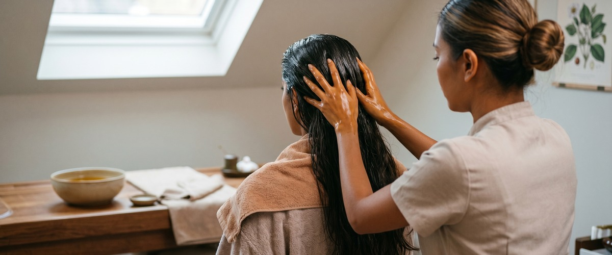
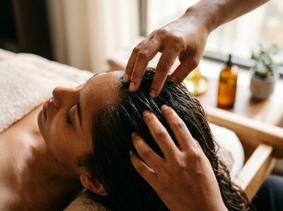
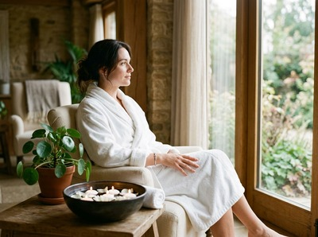

If your scalp feels tight, your hair looks dull, or stress has settled across your neck and shoulders, a head and hair oiling treatment at Thai Massage Greenock addresses all three at once.

This deeply nourishing therapy is one of the most restorative treatments you can choose, combining therapeutic-grade oils with targeted scalp massage to leave both your hair and your nervous system in noticeably better shape.
Head and hair oiling is an ancient Ayurvedic practice that uses warm, nourishing oils worked into the scalp and hair with firm, rhythmic massage strokes. The treatment stimulates circulation to the scalp, encourages the oils to penetrate each hair shaft, and uses sustained pressure across the head, neck, and shoulders to release accumulated muscle tension. Jariya applies traditional Thai massage technique to the neck and upper back as part of the session, making this more than a simple hair treatment.

The oils used are selected to suit your hair type and scalp condition. Common choices include coconut, argan, and sweet almond, each chosen for their ability to condition the scalp, smooth the hair cuticle, and support healthy hair growth over time.
This treatment suits anyone who carries tension in their head, neck, or shoulders, as well as those whose hair has become dry, brittle, or prone to breakage. It is a good fit for people who spend long hours at a screen, those dealing with stress-related scalp tightness, and anyone whose hair care routine has not been keeping pace with the demands of daily life. If you live or work in Inverclyde and find that stress often settles at the top of your spine, this treatment is worth trying.
You will be seated comfortably throughout the session. Jariya warms the oil before applying it to your scalp in sections, working it through with circular fingertip pressure and longer strokes from root to tip. The massage then moves to the neck, shoulders, and upper back to release the tension that so often accompanies a tight scalp. Sessions typically run 45 to 60 minutes. You can book your session online and note any preferences for oil type or pressure.

Your hair will be oily after the treatment. Many clients choose to leave the oil in for a few hours before washing, which allows deeper conditioning. Wear something you do not mind getting a little oil on at the collar, and tie long hair loosely so Jariya has easy access to the scalp. You will feel noticeably lighter through the head and neck when you leave.
At Thai Massage Greenock, Jariya combines her Wat Po-trained massage technique with a genuine understanding of how the body holds stress. Every treatment is tailored to what you need on the day. Book your head and hair oiling on South Street, Greenock, or explore our full range including Thai Aromatherapy Massage and Thai Facial Massage for a more complete treatment.
There is no need to wash your hair beforehand. Clean, dry hair absorbs the oil well, but the treatment works on hair that has already been washed that morning too. Avoid applying any heavy styling products before you arrive, as these can prevent the oil from reaching the scalp properly.
A typical session runs between 45 and 60 minutes, depending on whether you want to include additional work on the neck and upper back. Jariya will discuss your needs at the start of the appointment so the session is focused on what matters most to you.
Most clients leave feeling noticeably calmer, with reduced tightness through the neck and shoulders. The scalp feels less tense and more supple. Your hair will be oily from the treatment oil, so plan to either wash it that evening or leave it overnight for a deeper conditioning effect before shampooing the following morning.
For general stress relief and scalp health, once or twice a month is a good starting point. If you are dealing with a dry scalp, significant hair breakage, or chronic neck tension, more frequent sessions in the early weeks can make a noticeable difference. Jariya will advise based on how your scalp and hair respond.
Head and hair oiling focuses on the scalp, hair, neck, and upper back, with oil applied throughout and massage pressure concentrated on releasing scalp and shoulder tension. Thai Facial Massage, a technique targeting the face, jaw, and temples, works on different muscle groups and uses no oil. Some clients choose to combine both in a single visit for a complete upper-body treatment.
Please let Jariya know at the time of booking if you have any scalp conditions, allergies, or sensitivities. Oil selection can be adjusted to suit you, and certain conditions may mean a lighter approach is more appropriate. A brief consultation at the start of every session ensures the treatment is right for you on that day.